isomorphism of presheaves induces isomorphism of stalks
1. Proposition
Let 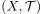 be a topological space and 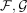 V-valued presheafs for a category 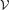 with stalks 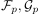 at a point 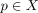.
Suppose  is a isomorphism of presheaves, then 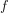 induces an isomorphism 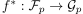
is a isomorphism of presheaves, then 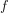 induces an isomorphism 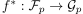
2. Proof
Follows from morphism of presheaves induces morphism on the stalks: by Assumption, and 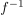 induce unique $f*, f-1^, such that the induced diagrams commute. Hence
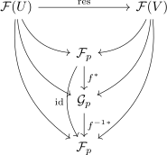